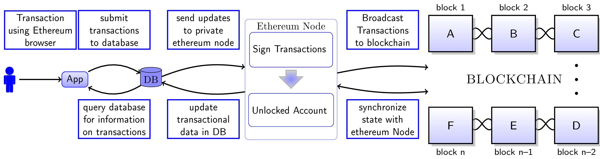

%\documentclass[class=scrreprt,preview]{standalone}
\documentclass[class=scrreprt,pagesize=off]{standalone}
\usepackage{graphicx}
\usepackage[T1]{fontenc}
\usepackage{tikz}
\usetikzlibrary{calc,positioning,shapes.geometric}
\usetikzlibrary{positioning,matrix,shapes.arrows}
\usetikzlibrary{arrows}
\tikzset{
modulematrix/.style={draw=blue!50,rounded corners,matrix of nodes,row sep=1cm,column sep=2cm,nodes={draw=blue,align=center,font=\sffamily},inner ysep=0.5cm},
module/.style={rounded corners, align=center, font=\sffamily, thick},
simple module/.style={module, top color=blue!10, bottom color=blue!35, draw=blue!75, text width=7.5mm, minimum height=5mm},
module down arrow/.style={module arrow, shape border rotate=-90},
module right arrow/.style={module arrow},
module arrow/.style={single arrow, single arrow head extend=2.5mm, draw=gray!75, inner color=blue!45, outer color=gray!35, thick, shape border uses incircle, anchor=tail,minimum height=0.7cm},
}
\tikzset{
database/.style={
cylinder,
cylinder uses custom fill,
cylinder body fill=blue!45,
cylinder end fill=blue!45,
shape border rotate=90,
aspect=0.25,
draw
}
}
\begin{document}
\begin{tikzpicture}
\node[inner sep=0pt] (user) at (0,0)
{\includegraphics[width=.05\textwidth]{person.pdf}};
\node [simple module,right = 0.5 cm of user] (app) at (1.5,0) {App};
\node[database,right = 2cm of app] (db) {DB};
\matrix[modulematrix,right=3.2cm of db,label={[anchor=north]above:Ethereum Node}] (ethNode) {Sign Transactions \\ Unlocked Account \\};
\foreach \n in {ethNode-1-1}
\node[module down arrow,below=1mm of \n] {};
\node[inner sep=0pt, right = 3.5cm of ethNode] (bchain)
{\includegraphics[width=.45\textwidth]{linkedBlocks.pdf}};
% Arrows
\draw [->,very thick,bend right] (user) -- node [text width=2.5cm,midway,above=3em,draw=blue,align=center,font=\sffamily] {Transaction using Ethereum browser } (app);
% app to node
\draw [->, very thick] (app) to [bend left](db);
\draw [->, very thick] (db) to [bend left](app);
% db to node
\draw [->, very thick] (db) to [bend left=15](ethNode);
\draw [<-, very thick] (db) to [bend right=15](ethNode);
% node to blockchain
\draw [->, very thick] (ethNode) to [bend left=8](bchain);
\draw [<->, very thick] (ethNode) to [bend right=8](bchain);
% Paths, label about arrows
\path (app) -- node [very thick,text width=2.5cm,midway,above=3em,draw=blue,align=center,font=\sffamily] {submit transactions to database} (db);
\path (app) -- node [very thick,text width=2.5cm,midway,above=-6em,draw=blue,align=center,font=\sffamily] {query database for information on transactions} (db);
% Paths, eth node
\path (db) -- node [very thick,text width=2.5cm,midway,above=3em,draw=blue,align=center,font=\sffamily] {send updates to private ethereum node} (ethNode);
\path (db) -- node [very thick,text width=2.5cm,midway,above=-6em,draw=blue,align=center,font=\sffamily] {update \\ transactional data in DB} (ethNode);
% eth node to blockchain
\path (ethNode) -- node [very thick,text width=2.5cm,midway,above=3em,draw=blue,align=center,font=\sffamily] {Broadcast Transactions to blockchain} (bchain);
\path (ethNode) -- node [very thick,text width=2.5cm,midway,above=-6em,draw=blue,align=center,font=\sffamily] {synchronize state with ethereum Node} (bchain);
% Perform transaction % Footnotes
% \node[inner sep=0pt,outer sep=0pt, font=\footnotesize,label={[yshift=-2ex]north west:{\large Note:}},text width=1.5\textwidth,anchor=north west] at ([yshift=-13,xshift=1cm]current bounding box.south west) (a)
% {\large
% A blockchain is a digitized, decentralized, public ledger of all cryptocurrency transactions.
% To access websites on the Ethereum blockchain and use dapps a specialized browser is needed, or a plugin like metamask. \\
% \textbf{Signing Transactions}: with a private local ethereum node, use its JSON RPC interface from the application to \\ perform all your blockchain operations. In order to sign something, a mathematical function is used to "sign" a piece of document/data. A digital signature of a document/data is a number generated using a private key. The private key has a corresponding public key. \\};
\end{tikzpicture}
\end{document}